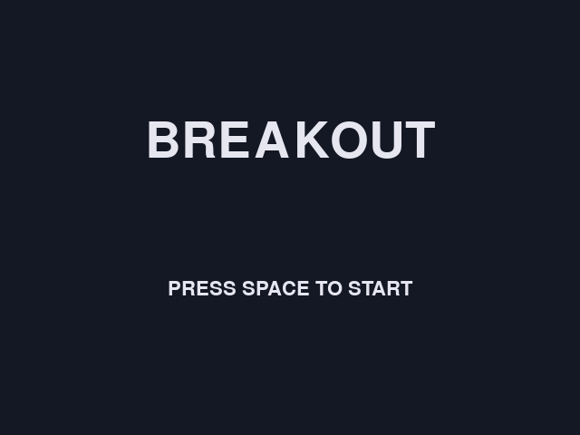
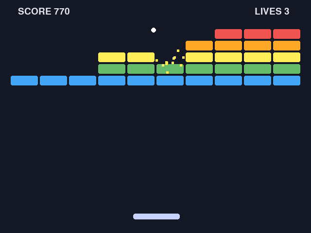
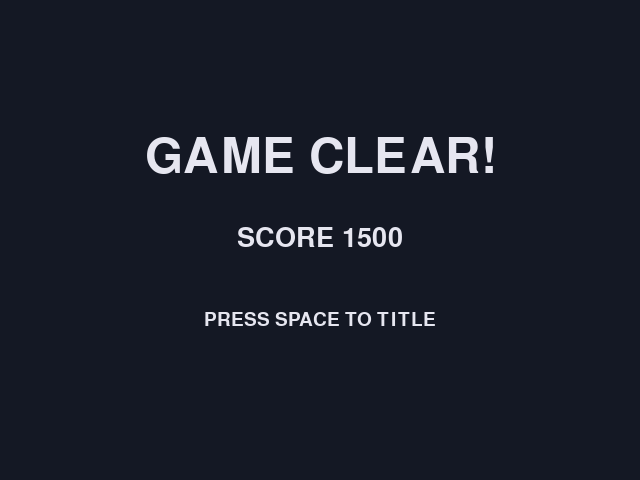
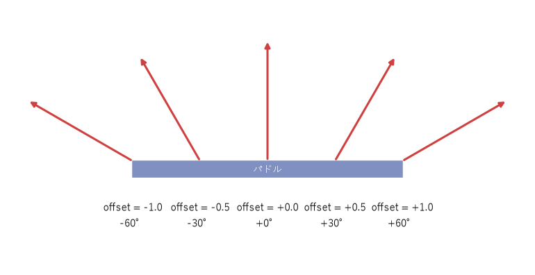

7. 制作実践：ブロック崩しを作る
この章では、pygame-ce を使ってブロック崩しを作る。一度に完成形を書くのではなく、遊べる状態を保ちながら少しずつ機能を足していく。これは企画で述べた、MVP から段階的に作る進め方の実践でもある。
7.1. 完成形と進め方
完成したゲームは、タイトル、プレイ、結果の 3 つの画面からなる。
 |
 |
 |
タイトル画面 |
プレイ画面 |
結果画面 |
ゲームのルールは次のとおりである。
左右キー（または A キーと D キー）でパドルを動かし、スペースキーでボールを発射する。
ボールがブロックに当たるとブロックが壊れ、得点が入る。上の段ほど得点が高い。
ボールを画面の下に落とすと残機が 1 減る。残機が 0 になるとゲームオーバー、ブロックをすべて壊すとクリアである。
Esc キーでいつでも終了できる。
制作は次の 7 段階で進める。各段階のファイルはそれだけで動く完全なプログラムになっているので、ダウンロードしてそのまま実行できる。
段階 |
ファイル |
内容 |
|---|---|---|
Step 1 |
ウィンドウを表示し、ゲームループを回す |
|
Step 2 |
キー入力でパドルを動かす |
|
Step 3 |
ボールを動かし、壁とパドルで反射させる |
|
Step 4 |
ブロックを並べ、当たったら壊す |
|
Step 5 |
スコアと残機、クリアとゲームオーバーの判定 |
|
Step 6 |
タイトル・プレイ・結果のシーンに分ける |
|
Step 7 |
効果音と演出を加えて完成させる |
各ファイルは次のように実行する（Step 1 の場合）。
1py step01_window.py
7.2. Step 1：ウィンドウとゲームループ
Step 1 は、ウィンドウを開いてゲームループを回すだけのプログラムである。内容はゲームプログラミングの基礎のゲームループの節で説明したので、ここでは実行して、何も無い紺色のウィンドウが表示され、閉じるボタンで終了できることを確かめればよい。
7.3. Step 2：パドルを動かす
Step 2 では、プレイヤーが操作するパドルを作る。まず、ファイルの先頭に、ゲームの設定値を定数としてまとめる。
1# --- 画面とゲーム全体の設定 ---
2SCREEN_WIDTH = 640
3SCREEN_HEIGHT = 480
4FPS = 60
5MAX_DT = 1 / 30 # 1 フレームで進める時間の上限（秒）
6
7BG_COLOR = (20, 24, 36)
8PADDLE_COLOR = (200, 210, 255)
9
10# --- パドル ---
11PADDLE_WIDTH = 96
12PADDLE_HEIGHT = 12
13PADDLE_Y = SCREEN_HEIGHT - 40
14PADDLE_SPEED = 480.0 # ピクセル毎秒
パドルの速さや大きさのような数値をコードの中に直接書かずに定数にしておくと、後でバランス調整をするときに 1 か所を変えるだけで済む。速さの単位を「ピクセル毎秒」にしているのは、デルタタイムを掛けて使うためである。
パドルは Paddle クラスで表す。
1class Paddle:
2 """プレイヤーが操作するパドル。"""
3
4 def __init__(self) -> None:
5 # 位置を小数で保持するため、pygame-ce の FRect を使う
6 self.rect = pygame.FRect(0, 0, PADDLE_WIDTH, PADDLE_HEIGHT)
7 self.rect.midtop = (SCREEN_WIDTH / 2, PADDLE_Y)
8
9 def update(self, dt: float, direction: float) -> None:
10 """direction（-1: 左、0: 停止、1: 右）の向きに dt 秒ぶん動かす。画面外には出さない。"""
11 self.rect.x += direction * PADDLE_SPEED * dt
12 self.rect.left = max(self.rect.left, 0)
13 self.rect.right = min(self.rect.right, SCREEN_WIDTH)
14
15 def draw(self, screen: pygame.Surface) -> None:
16 pygame.draw.rect(screen, PADDLE_COLOR, self.rect, border_radius=4)
6 行目で、位置と大きさを
pygame.FRectで持つ。小数の座標を保持できるので、デルタタイムを掛けた細かな移動量が失われない。11 行目で、向き・速さ・デルタタイムを掛けて移動させる。
12 行目と 13 行目で、パドルが画面の左右からはみ出さないようにする。
キーの状態から動かす向きを求める処理は、関数に分けておく。
1def read_direction() -> float:
2 """押されているキーから、パドルを動かす向き（-1、0、1）を求める。"""
3 keys = pygame.key.get_pressed()
4 direction = 0.0
5 if keys[pygame.K_LEFT] or keys[pygame.K_a]:
6 direction -= 1
7 if keys[pygame.K_RIGHT] or keys[pygame.K_d]:
8 direction += 1
9 return direction
左右のキーを同時に押すと、-1 + 1 で 0 になり、パドルは止まる。
7.4. Step 3：ボールを動かして反射させる
Step 3 では、ボールを追加する。ボールは発射前はパドルの上に乗っていて、スペースキーで発射される。
1class Ball:
2 """パドルで打ち返すボール。"""
3
4 def __init__(self) -> None:
5 self.rect = pygame.FRect(0, 0, BALL_SIZE, BALL_SIZE)
6 self.velocity = pygame.Vector2(0, 0) # 速度（ピクセル毎秒）
7 self.launched = False
8
9 def follow(self, paddle: Paddle) -> None:
10 """発射前はパドルの上に乗せておく。"""
11 self.rect.midbottom = paddle.rect.midtop
12
13 def launch(self) -> None:
14 """真上から左右 30 度の範囲で、ランダムな向きに発射する。"""
15 self.velocity = pygame.Vector2(0, -BALL_SPEED).rotate(random.uniform(-30, 30))
16 self.launched = True
17
18 def draw(self, screen: pygame.Surface) -> None:
19 pygame.draw.ellipse(screen, BALL_COLOR, self.rect)
速度は pygame.Vector2 で表す。発射時の速度（15 行目）は、真上を向いた長さ BALL_SPEED のベクトルを、rotate メソッドで左右に最大 30 度回転させて作る。毎回同じ向きに飛ぶと単調になるため、乱数で向きを変えている。
パドルで跳ね返すときの向きの決め方が、ブロック崩しの手触りを大きく左右する。単純に y 方向の速度を反転するだけでは、ボールは常に同じ角度で往復し、プレイヤーは狙いを付けられない。そこで、パドルのどこに当たったかで反射の向きを変える。
パドルの中心から当たった位置までのずれを、左端で \(-1\)、中心で \(0\)、右端で \(1\) になるように表した値を \(o\) とする。最大の傾きを \(\theta_{\max}\)（本書では 60 度）、ボールの速さを \(s\) とすると、反射後の傾き \(\theta\) と速度 \((v_x, v_y)\) は次のようになる。y 軸が下向きなので、上に向かう \(v_y\) は負になる。

図 7.1 パドルに当たった位置と反射の向き
1def paddle_bounce_velocity(offset: float, speed: float) -> pygame.Vector2:
2 """パドルで反射した後の速度を返す。
3
4 offset はパドルの中心から当たった位置までのずれで、左端が -1.0、中心が 0.0、右端が 1.0 である。
5 端に当たるほど大きく斜めに跳ね返り、速さ（speed）は変えない。
6 """
7 offset = max(-1.0, min(1.0, offset))
8 angle = offset * MAX_BOUNCE_ANGLE
9 return pygame.Vector2(speed * math.sin(angle), -speed * math.cos(angle))
7 行目で、ずれを -1 から 1 の範囲に収める。パドルの端ぎりぎりに当たるとボールの中心がパドルの外にあり、1 を超えることがあるからである。\(\sin^2\theta + \cos^2\theta = 1\) なので、どの位置に当たってもボールの速さは \(s\) のまま変わらない。
ボールを動かして壁とパドルで反射させる処理は、次のようになる。
1def move_ball(ball: Ball, dt: float, paddle: Paddle) -> None:
2 """ボールを dt 秒ぶん動かし、壁とパドルで反射させる。"""
3 ball.rect.x += ball.velocity.x * dt
4 if ball.rect.left < 0:
5 ball.rect.left = 0
6 ball.velocity.x = abs(ball.velocity.x)
7 elif ball.rect.right > SCREEN_WIDTH:
8 ball.rect.right = SCREEN_WIDTH
9 ball.velocity.x = -abs(ball.velocity.x)
10
11 ball.rect.y += ball.velocity.y * dt
12 if ball.rect.top < 0:
13 ball.rect.top = 0
14 ball.velocity.y = abs(ball.velocity.y)
15
16 # 下向きに動いているときだけ判定し、パドルに何度も当たり続けるのを防ぐ
17 if ball.velocity.y > 0 and ball.rect.colliderect(paddle.rect):
18 ball.rect.bottom = paddle.rect.top
19 offset = (ball.rect.centerx - paddle.rect.centerx) / (paddle.rect.width / 2)
20 ball.velocity = paddle_bounce_velocity(offset, ball.velocity.length())
4 行目から 9 行目で、左右の壁に当たったら画面の内側に戻し、x 方向の速度の向きを変える。
velocity.x *= -1で反転させずにabsで向きを明示しているのは、何らかの理由で 2 フレーム続けて壁に当たったと判定されても、向きが元に戻らず必ず画面の内側へ向かうようにするためである。17 行目では、ボールが下向きに動いているときだけパドルとの当たり判定を行う。跳ね返った直後のボールがまだパドルと重なっていても、再び反射しないようにするためである。
19 行目で、パドルの中心からのずれを求めて、反射の向きを決める。
最後に、メインループに発射とボールの落下の処理を加える。
1def main() -> None:
2 pygame.init()
3 screen = pygame.display.set_mode((SCREEN_WIDTH, SCREEN_HEIGHT))
4 pygame.display.set_caption("Step 3: Ball")
5 clock = pygame.time.Clock()
6 paddle = Paddle()
7 ball = Ball()
8
9 running = True
10 while running:
11 dt = min(clock.tick(FPS) / 1000, MAX_DT)
12
13 for event in pygame.event.get():
14 if event.type == pygame.QUIT or (event.type == pygame.KEYDOWN and event.key == pygame.K_ESCAPE):
15 running = False
16 elif event.type == pygame.KEYDOWN and event.key == pygame.K_SPACE and not ball.launched:
17 ball.launch()
18
19 paddle.update(dt, read_direction())
20 if ball.launched:
21 move_ball(ball, dt, paddle)
22 if ball.rect.top > SCREEN_HEIGHT:
23 ball = Ball() # 画面の下に落ちたら、発射前の状態に戻す
24 else:
25 ball.follow(paddle)
26
27 screen.fill(BG_COLOR)
28 paddle.draw(screen)
29 ball.draw(screen)
30 pygame.display.flip()
31
32 pygame.quit()
16 行目と 17 行目で、スペースキーが押されたイベントを受けてボールを発射する。22 行目と 23 行目では、ボールが画面の下に落ちたら Ball を作り直し、パドルの上に戻す。
7.5. Step 4：ブロックを壊す
Step 4 では、ブロックを並べて、ボールが当たったら壊れるようにする。ブロックはデータを持つだけの単純なクラスなので、dataclasses.dataclass で定義する。
1@dataclass
2class Block:
3 """壊す対象のブロック。"""
4
5 rect: pygame.Rect
6 color: tuple[int, int, int]
7
8 def draw(self, screen: pygame.Surface) -> None:
9 pygame.draw.rect(screen, self.color, self.rect, border_radius=3)
1def create_blocks() -> list[Block]:
2 """ブロックを格子状に並べ、画面の左右中央に配置する。"""
3 total_width = BLOCK_COLS * BLOCK_WIDTH + (BLOCK_COLS - 1) * BLOCK_GAP
4 left = (SCREEN_WIDTH - total_width) // 2
5 blocks: list[Block] = []
6 for row in range(BLOCK_ROWS):
7 for col in range(BLOCK_COLS):
8 x = left + col * (BLOCK_WIDTH + BLOCK_GAP)
9 y = BLOCK_TOP + row * (BLOCK_HEIGHT + BLOCK_GAP)
10 blocks.append(Block(pygame.Rect(x, y, BLOCK_WIDTH, BLOCK_HEIGHT), BLOCK_COLORS[row]))
11 return blocks
create_blocks は、10 列 5 段のブロックを、全体が画面の左右中央に来るように並べる。
ブロックとの当たり判定で難しいのは、ボールがブロックの側面に当たったのか、上下の面に当たったのかを見分けることである。側面に当たったなら x 方向、上下の面なら y 方向の速度の向きを変えなければならない。
本書では、ボールを x 方向と y 方向に分けて動かし、それぞれの移動の直後に当たり判定を行う方法を使う。x 方向に動かした直後に重なったなら側面に、y 方向に動かした直後に重なったなら上下の面に当たったと判断できる。
1def move_ball(ball: Ball, dt: float, paddle: Paddle, blocks: list[Block]) -> list[Block]:
2 """ボールを dt 秒ぶん動かし、壁・ブロック・パドルで反射させる。
3
4 x 方向と y 方向を別々に動かし、それぞれの移動の直後に当たり判定を行う。
5 こうすると、ぶつかった面（側面か上下の面か）が移動の向きから分かる。
6 当たったブロックは blocks から取り除き、戻り値のリストに入れて返す。
7 """
8 hit_blocks: list[Block] = []
9
10 # x 方向に動かし、左右の壁とブロックの側面で反射させる
11 ball.rect.x += ball.velocity.x * dt
12 if ball.rect.left < 0:
13 ball.rect.left = 0
14 ball.velocity.x = abs(ball.velocity.x)
15 elif ball.rect.right > SCREEN_WIDTH:
16 ball.rect.right = SCREEN_WIDTH
17 ball.velocity.x = -abs(ball.velocity.x)
18 block = pop_hit_block(ball, blocks)
19 if block is not None:
20 # めり込んだ分を押し戻してから向きを反転する
21 if ball.velocity.x > 0:
22 ball.rect.right = block.rect.left
23 else:
24 ball.rect.left = block.rect.right
25 ball.velocity.x *= -1
26 hit_blocks.append(block)
27
28 # y 方向に動かし、上の壁とブロックの上下の面で反射させる
29 ball.rect.y += ball.velocity.y * dt
30 if ball.rect.top < 0:
31 ball.rect.top = 0
32 ball.velocity.y = abs(ball.velocity.y)
33 block = pop_hit_block(ball, blocks)
34 if block is not None:
35 if ball.velocity.y > 0:
36 ball.rect.bottom = block.rect.top
37 else:
38 ball.rect.top = block.rect.bottom
39 ball.velocity.y *= -1
40 hit_blocks.append(block)
41
42 # 下向きに動いているときだけ判定し、パドルに何度も当たり続けるのを防ぐ
43 if ball.velocity.y > 0 and ball.rect.colliderect(paddle.rect):
44 ball.rect.bottom = paddle.rect.top
45 offset = (ball.rect.centerx - paddle.rect.centerx) / (paddle.rect.width / 2)
46 ball.velocity = paddle_bounce_velocity(offset, ball.velocity.length())
47
48 return hit_blocks
18 行目で、ボールと重なっているブロックを探して取り除く（
pop_hit_block関数）。21 行目から 24 行目で、めり込んだ分を押し戻す。右に動いていたならブロックの左側に、左に動いていたなら右側にボールを置く。押し戻さないと、次のフレームでも重なったままになり、隣のブロックを巻き込んで不自然に反射する。
29 行目から 40 行目で、y 方向についても同じ処理を行う。
48 行目で、壊したブロックのリストを返す。Step 5 ではこれを使って得点を計算する。
1def pop_hit_block(ball: Ball, blocks: list[Block]) -> Block | None:
2 """ボールに重なっているブロックを 1 つ blocks から取り除いて返す。無ければ None を返す。"""
3 index = ball.rect.collidelist([block.rect for block in blocks])
4 if index < 0:
5 return None
6 return blocks.pop(index)
collidelist は、リストの中でボールと重なっている最初の長方形の番号を返し、無ければ -1 を返す。
この方法は、ボールが 1 フレームに数ピクセルしか動かない場合には十分に機能する。ただし、ボールがブロックの角に当たった場合の反射は、物理的に厳密なものではない。ゲームでは、物理的な正しさよりも、プレイヤーにとって自然に見えて遊びやすいことを優先してよい。
7.6. Step 5：スコアと勝敗
Step 5 では、スコアと残機を表示し、クリアとゲームオーバーを判定する。
文字の描画には pygame.font.Font を使う。Font(None, 大きさ) とすると、pygame-ce に同梱されたフォントが使われる。ただし、同梱のフォントには日本語の文字が無いので、画面の文字は英語にしている。日本語を表示する方法はアセット制作で扱う。
1def draw_text(screen: pygame.Surface, text: str, size: int, center: tuple[float, float]) -> None:
2 """文字列を、center が中心になるように描画する。"""
3 image = get_font(size).render(text, True, TEXT_COLOR)
4 screen.blit(image, image.get_rect(center=center))
フォントの読み込みには時間がかかるので、毎フレーム読み込むのは避けたい。そこで、フォントを返す get_font 関数に functools.cache デコレーターを付けて、同じ大きさのフォントを 2 回目以降は作成済みのもので済ませている。
ゲームの進行状況は、Game クラスの state 属性に文字列で持たせる。
1class Game:
2 """1 回のプレイの状態をまとめて管理する。"""
3
4 def __init__(self) -> None:
5 self.paddle = Paddle()
6 self.ball = Ball()
7 self.blocks = create_blocks()
8 self.score = 0
9 self.lives = START_LIVES
10 # 進行状況。"playing"（プレイ中）、"clear"（クリア）、"over"（ゲームオーバー）のいずれか
11 self.state: Literal["playing", "clear", "over"] = "playing"
12
13 def update(self, dt: float) -> None:
14 if self.state != "playing":
15 return
16 self.paddle.update(dt, read_direction())
17 if not self.ball.launched:
18 self.ball.follow(self.paddle)
19 return
20
21 for block in move_ball(self.ball, dt, self.paddle, self.blocks):
22 self.score += block.points
23 if not self.blocks:
24 self.state = "clear"
25 elif self.ball.rect.top > SCREEN_HEIGHT:
26 self.lives -= 1
27 if self.lives == 0:
28 self.state = "over"
29 else:
30 self.ball = Ball()
31
32 def draw(self, screen: pygame.Surface) -> None:
33 screen.fill(BG_COLOR)
34 for block in self.blocks:
35 block.draw(screen)
36 self.paddle.draw(screen)
37 self.ball.draw(screen)
38 draw_text(screen, f"SCORE {self.score}", 28, (90, 24))
39 draw_text(screen, f"LIVES {self.lives}", 28, (SCREEN_WIDTH - 80, 24))
40
41 center_x = SCREEN_WIDTH / 2
42 if self.state == "playing" and not self.ball.launched:
43 draw_text(screen, "PRESS SPACE", 28, (center_x, SCREEN_HEIGHT * 0.6))
44 elif self.state != "playing":
45 message = "GAME CLEAR!" if self.state == "clear" else "GAME OVER"
46 draw_text(screen, message, 64, (center_x, SCREEN_HEIGHT / 2))
47 draw_text(screen, "PRESS SPACE TO RETRY", 28, (center_x, SCREEN_HEIGHT * 0.6))
11 行目の
stateは、プレイ中（"playing"）、クリア（"clear"）、ゲームオーバー（"over"）のいずれかである。型ヒントにLiteralを使っているので、ほかの文字列を代入すると mypy が誤りとして検出する。21 行目と 22 行目で、壊したブロックの得点を加算する。
23 行目から 30 行目で、ブロックが無くなればクリア、ボールを落として残機が 0 になればゲームオーバーにする。
これで、ゲームとして最低限遊べる状態になった。企画で決めた必須の要素がそろったので、これが MVP に当たる。
7.7. Step 6：シーンに分ける
Step 5 の Game クラスは、update と draw の中で state による条件分岐を行っている。ここにタイトル画面やポーズ画面などを加えていくと、条件分岐が増えて見通しが悪くなる。そこで Step 6 では、ゲームプログラミングの基礎で説明したシーンの考え方に従い、画面ごとにクラスを分ける。
まず、すべてのシーンの基になる Scene クラスを作る。
1class Scene:
2 """シーンの基底クラス。各シーンは必要なメソッドだけを上書きする。"""
3
4 def __init__(self) -> None:
5 # 次に切り替えるシーン。None の間は現在のシーンを続ける
6 self.next_scene: Scene | None = None
7
8 def handle_event(self, event: pygame.event.Event) -> None:
9 """キー入力などのイベントを 1 つ処理する。"""
10
11 def update(self, dt: float) -> None:
12 """状態を dt 秒ぶん進める。"""
13
14 def draw(self, screen: pygame.Surface) -> None:
15 """現在の状態を画面に描画する。"""
各シーンは、イベントの処理（handle_event）、更新（update）、描画（draw）の 3 つのメソッドを持つ。基底クラスのメソッドは何もしないので、各シーンは必要なものだけを上書きすればよい。シーンを切り替えたいときは、6 行目の next_scene に次のシーンを設定する。
TitleScene、PlayScene、ResultScene の 3 つのクラスがこれを継承する。PlayScene の中身は、Step 5 の Game クラスから state による分岐を取り除いたものになる。
メインループは、現在のシーンにイベントの処理・更新・描画を任せるだけになる。
1def main() -> None:
2 pygame.init()
3 screen = pygame.display.set_mode((SCREEN_WIDTH, SCREEN_HEIGHT))
4 pygame.display.set_caption("Step 6: Scenes")
5 clock = pygame.time.Clock()
6 scene: Scene = TitleScene()
7
8 running = True
9 while running:
10 dt = min(clock.tick(FPS) / 1000, MAX_DT)
11
12 for event in pygame.event.get():
13 if event.type == pygame.QUIT or (event.type == pygame.KEYDOWN and event.key == pygame.K_ESCAPE):
14 running = False
15 else:
16 scene.handle_event(event)
17
18 scene.update(dt)
19 scene.draw(screen)
20 pygame.display.flip()
21
22 # シーンの切り替えは、フレームの最後にまとめて行う
23 if scene.next_scene is not None:
24 scene = scene.next_scene
25
26 pygame.quit()
23 行目と 24 行目で、シーンが next_scene を設定していれば切り替える。切り替えをフレームの最後にまとめて行うのは、更新の途中でシーンが入れ替わり、半端な状態のシーンが描画されるのを防ぐためである。
7.8. Step 7：効果音と演出で仕上げる
Step 7 では、効果音と、ブロックを壊したときに破片が飛び散る演出を加える。こうした演出はルールには影響しないが、ゲームの手触りを大きく改善する（品質を高めるの「手触りを良くする」の節を参照）。
効果音は、音声ファイルを使わずにプログラムで生成する。矩形波と呼ばれる、値が正と負を交互に繰り返す単純な波形で、昔のゲーム機のような電子音になる。
1def make_tone(frequency: float, duration: float, volume: float = 0.3) -> pygame.mixer.Sound:
2 """矩形波の効果音をプログラムで生成する。音声ファイルを用意しなくてよい。"""
3 mixer_settings = pygame.mixer.get_init()
4 if mixer_settings is None:
5 raise pygame.error("mixer is not initialized")
6 # 量子化ビット数は、pygame の既定である 16 ビット符号付き整数を前提とする
7 sample_rate, _, channels = mixer_settings
8 period = sample_rate / frequency # 波 1 周期あたりのサンプル数
9 total = int(sample_rate * duration)
10 samples = array("h")
11 for i in range(total):
12 value = volume * 32767 if i % period < period / 2 else -volume * 32767
13 fade = 1 - i / total # 徐々に音量を下げ、音の終わりに出る雑音を防ぐ
14 samples.extend([int(value * fade)] * channels)
15 return pygame.mixer.Sound(buffer=samples.tobytes())
7 行目で、音声の設定（1 秒あたりのサンプル数とチャンネル数）を取得する。
12 行目で、1 周期の前半は正、後半は負の値を作る。これが矩形波である。
13 行目で、時間とともに音量を下げる。急に音が途切れると、プツッという雑音が出るためである。
15 行目で、作った波形のデータから
pygame.mixer.Soundを作る。
音声を出力できる機器が無い環境では pygame.mixer.init() が失敗する。SoundBank クラスはその場合に例外を捕まえ、音を鳴らさずにゲームを続けられるようにしている。
破片の演出は、Particle（粒子）という小さなデータを多数作り、それぞれに速度と残り時間を持たせて動かすことで実現している。このような演出の手法をパーティクルと呼ぶ。プレイ画面の PlayScene では、move_ball が返す結果（何に当たったか）に応じて、効果音を鳴らし、破片を発生させる。
1class PlayScene(Scene):
2 """プレイ画面。クリアするか残機が無くなったら結果画面に進む。"""
3
4 def __init__(self, sounds: SoundBank) -> None:
5 super().__init__()
6 self.sounds = sounds
7 self.paddle = Paddle()
8 self.ball = Ball()
9 self.blocks = create_blocks()
10 self.particles: list[Particle] = []
11 self.score = 0
12 self.lives = START_LIVES
13
14 def handle_event(self, event: pygame.event.Event) -> None:
15 if event.type == pygame.KEYDOWN and event.key == pygame.K_SPACE and not self.ball.launched:
16 self.ball.launch()
17
18 def update(self, dt: float) -> None:
19 self.paddle.update(dt, read_direction())
20 update_particles(self.particles, dt)
21 if not self.ball.launched:
22 self.ball.follow(self.paddle)
23 return
24
25 result = move_ball(self.ball, dt, self.paddle, self.blocks)
26 if result.wall:
27 self.sounds.play("wall")
28 if result.paddle:
29 self.sounds.play("paddle")
30 for block in result.blocks:
31 self.score += block.points
32 spawn_particles(self.particles, block.rect.center, block.color)
33 self.sounds.play("block")
34
35 if not self.blocks:
36 self.sounds.play("clear")
37 self.next_scene = ResultScene(self.sounds, self.score, cleared=True)
38 elif self.ball.rect.top > SCREEN_HEIGHT:
39 self.lives -= 1
40 self.sounds.play("miss")
41 if self.lives == 0:
42 self.next_scene = ResultScene(self.sounds, self.score, cleared=False)
43 else:
44 self.ball = Ball()
45
46 def draw(self, screen: pygame.Surface) -> None:
47 screen.fill(BG_COLOR)
48 for block in self.blocks:
49 block.draw(screen)
50 draw_particles(screen, self.particles)
51 self.paddle.draw(screen)
52 self.ball.draw(screen)
53 draw_text(screen, f"SCORE {self.score}", 28, (90, 24))
54 draw_text(screen, f"LIVES {self.lives}", 28, (SCREEN_WIDTH - 80, 24))
55 if not self.ball.launched:
56 draw_text(screen, "PRESS SPACE", 28, (SCREEN_WIDTH / 2, SCREEN_HEIGHT * 0.6))
25 行目の move_ball は、Step 6 では壊したブロックのリストを返していたが、Step 7 では壁やパドルに当たったかどうかも含めた HitResult を返すように変えている。効果音を鳴らすには、壁やパドルに当たったことも知る必要があるからである。
最後に、メインループを asyncio を使って書き換える。
1async def main() -> None:
2 pygame.init()
3 screen = pygame.display.set_mode((SCREEN_WIDTH, SCREEN_HEIGHT))
4 pygame.display.set_caption("Breakout")
5 clock = pygame.time.Clock()
6 scene: Scene = TitleScene(SoundBank())
7
8 running = True
9 while running:
10 dt = min(clock.tick(FPS) / 1000, MAX_DT)
11
12 for event in pygame.event.get():
13 if event.type == pygame.QUIT or (event.type == pygame.KEYDOWN and event.key == pygame.K_ESCAPE):
14 running = False
15 else:
16 scene.handle_event(event)
17
18 scene.update(dt)
19 scene.draw(screen)
20 pygame.display.flip()
21
22 # シーンの切り替えは、フレームの最後にまとめて行う
23 if scene.next_scene is not None:
24 scene = scene.next_scene
25
26 # ブラウザー上では、ここで処理をブラウザーに返して画面を更新させる
27 await asyncio.sleep(0)
28
29 pygame.quit()
1 行目で main を async def にし、27 行目でフレームごとに await asyncio.sleep(0) を呼ぶ。デスクトップで動かす分にはこの変更は不要だが、ビルドと配布物の作成でブラウザー版を作るときに必要になる。ブラウザーは、ゲームのプログラムが制御を返さない限り画面を更新できないためである。
7.9. 発展課題
完成したゲームを基に、次のような改造に挑戦してみるとよい。
複数のステージを作り、クリアするたびにブロックの並びを変える。
一定時間ごとにボールの速さを上げて、難易度を上げる。
壊すと落ちてくるアイテムを作り、取るとパドルが広がるようにする。
何回か当てないと壊れない、硬いブロックを作る。
最高得点をファイルに保存し、タイトル画面に表示する。